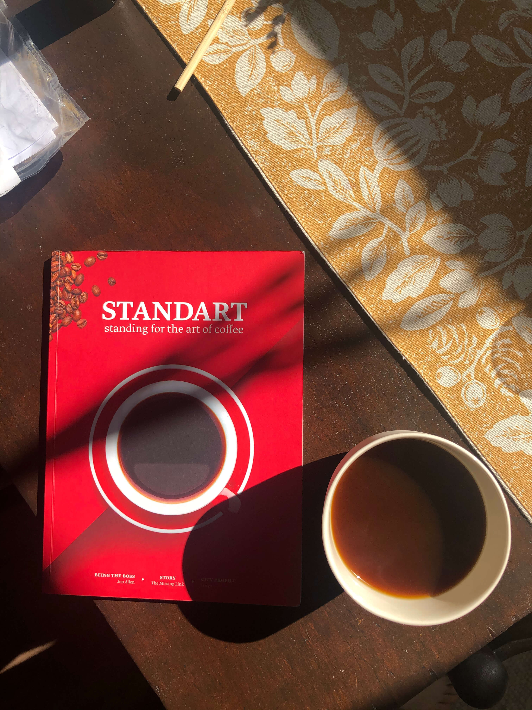
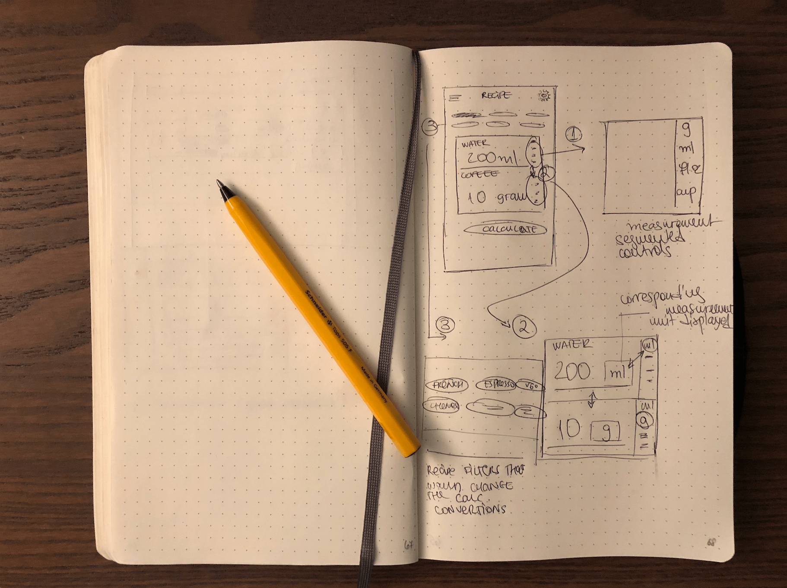
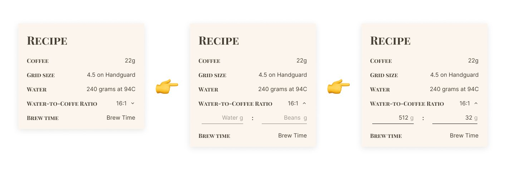
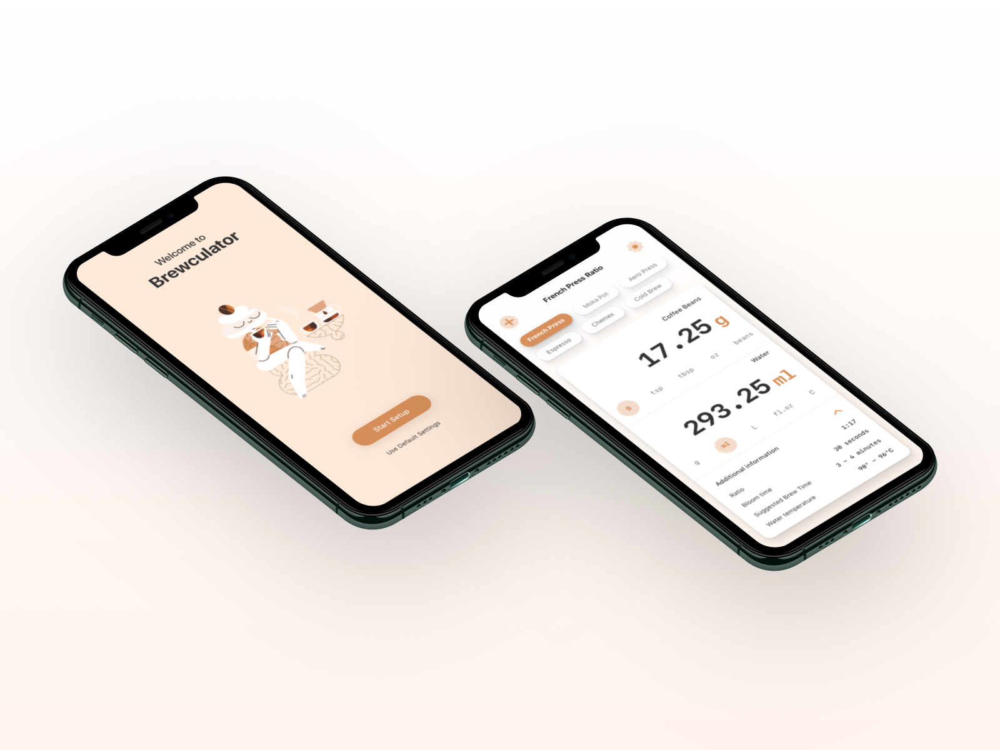
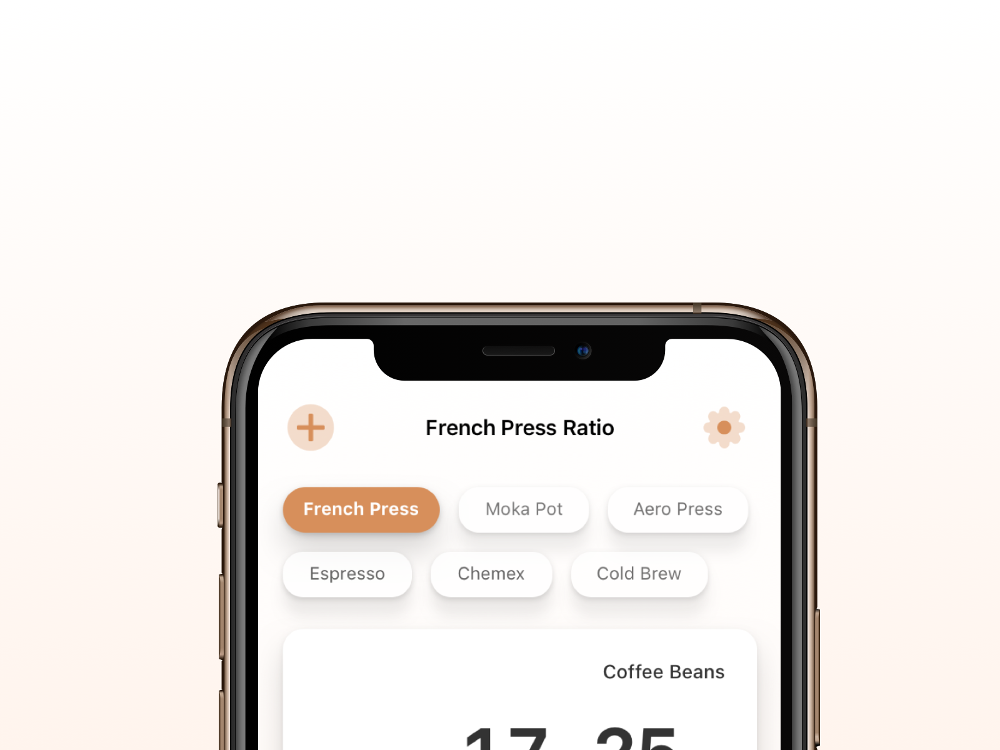
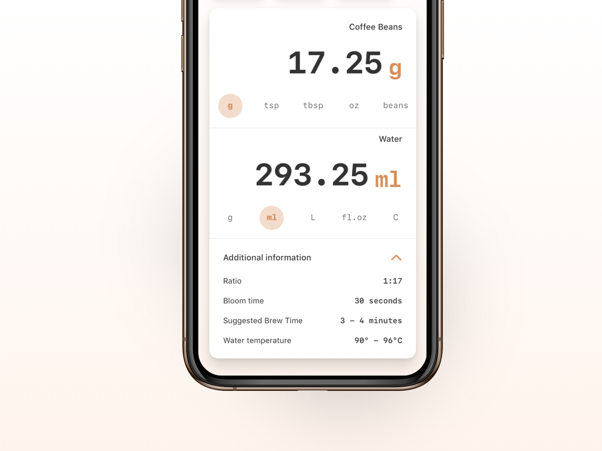
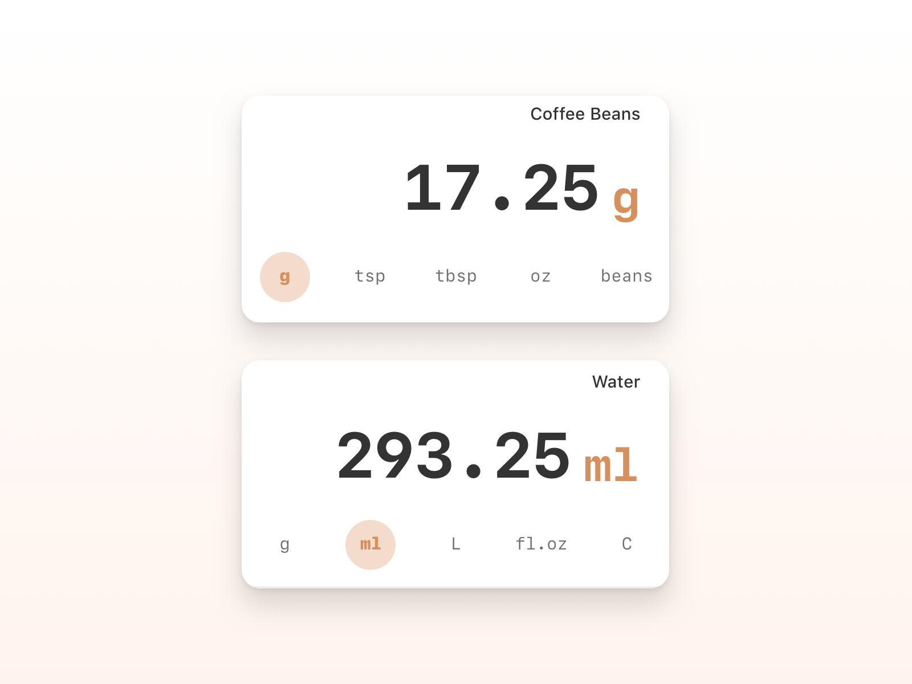
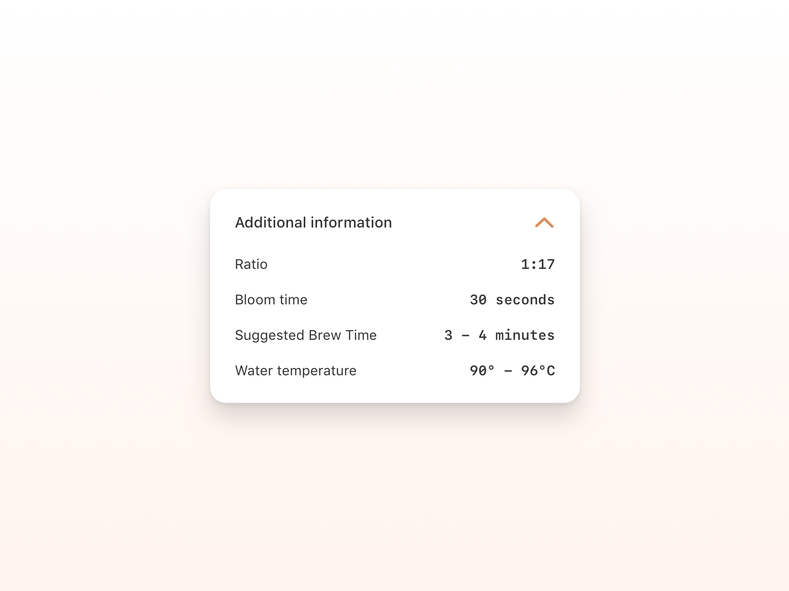
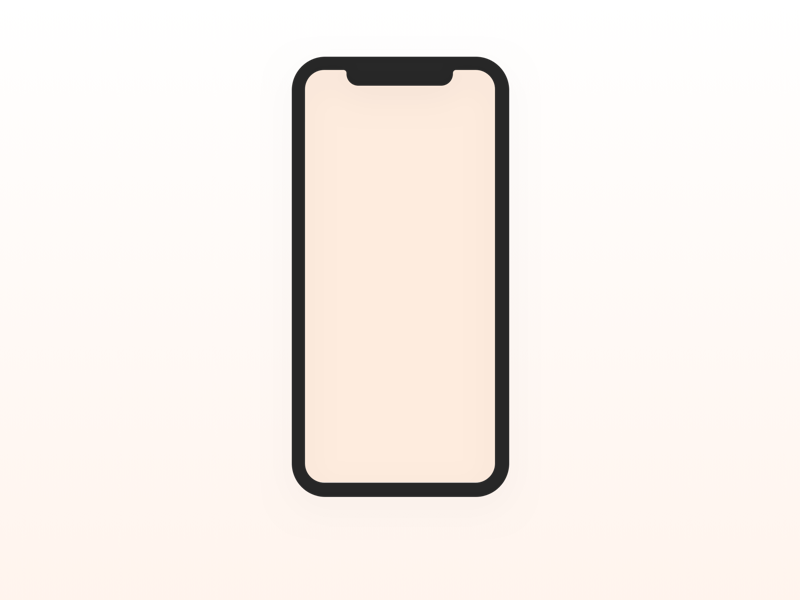
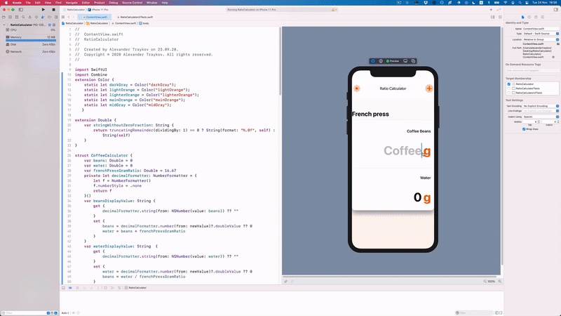

Preface
I am very passionate about coffee. In my spare time I tinker around my kitchen, trying to craft the best tasting French press, espresso or other various pourovers. I read about different sorts of beans and their sources, about ratio methods and ways to make the cup of Joe taste better.
Having spent more than a year exploring the world of coffee I noticed a repeating pattern - while brewing, I had to double-check the specific ratios, then find a calculator, then find a timer and after all that's set up I actually focus on the craft of making a cup. All of these complications started to bother me and did impact the quality of my coffee at times. At that moment the idea was born - I should make myself a calculator that has a bunch of pre-made ratios for the most popular brewing methods, fine control over the measuring units and probably some general tips of the brewing method itself.
Design process overview
When working on the side, I usually have the tendency to get carried away, hence why I follow a design process structure strictly. I always start with a bit of research that helps me formulate my idea, then I open up my trusty notebook for some of that hand drawing ideation. Once I get something cooking, I go to Sketch and I aim to formulate an initial design that I usually build upon until I'm happy with it. After the design is finalised, I try to bring it to life either on the web or on my iPhone.
Research and wireframing
The world of coffee is vast, rich and very complicated. The digitalisation of it has commenced more than 20 years ago. It's current state spans from various coffee forums and websites to mobile apps of all sorts and desktop-based applications for coffee gene analysis and tracking. The main idea of my research was to see if there's a need of an application like the one I had in mind. While the idea of a coffee calculator was present on the web and mobile realms, the exact combination of having your brewing recipes, methods and ratios in one place in your pocket were either behind paywalls or scattered throughout multiple pages and apps.
The research confirmed that there's a gap which I could potentially fill and hopefully make the mornings of other coffee enthusiasts a tad easier with my app. The idea for a coffee calculator has been in my head for the past one year, and I even had something very basic done for Caffetarium - the coffee blog I've been working on. I was very close to leverage both the design and approach to what I had before but then I encountered an awesome tweet.
A major part of the inspiration of how the app would work came from the super-talanted designer Aris Acoba and his tiny ice-pour over calculator he crafted a while back.
Thanks to the combination of what I had in mind, Aris' approach and my interpretation of it, it was time to boot up Sketch and bring this thing to life.
UI Design
After a number of iterations, small tweaks and good amount of reading of Apple's HIG, I ended up with the first version of the home screen. It's core idea is simplicity and flexibility at the hands of the users. My idea was to keep it as simple as possible, giving the users the ability to quickly calculate their coffee to water ratio and then focus on their brew in real life.
Filtering Segments
The screen is stripped down to a simple pill selector, the calculator itself and a hidden section with additional tips for the specific recipe. The selected recipe is highlighted both with the pill and the screen's heading as well. This is the most important controller in the app, since coffee is a very delicate science, in which you can ruin a cup with just a couple of grams of extra beans or water. Knowing that, having the different ratios as the first prominent item is crucial. The predefined ratio are based on a research I did, exploring the most popular recipes from renowned baristas and coffee experts from around the world.
The Ratio Calculator
The calculator is the core of the app. It was especially important for me to focus and create a seamless, minimalistic UI so it is intuitive and easy to use. This section of the app is split in two input fields which interact with one another based on the selected recipe. For example if you input 30 grams of coffee on the top field, the app would automatically return the needed amount of water (510ml in that case) for your recipe.
The different corresponding measuring units for the Coffee and Water sections of the calculator
At the bottom of both input fields, I added a bunch of segmented controls which allow the users change the measuring units of their choice. While my personal preference is to use grams for all my brews, many people are still using imperial metrics. The cool part of this feature is that it will allow users to have the flexibility to calculate their brews however they feel most comfortable, having a vast number of measurements at their hand.

The interactions of changing the measuring units in the segmented controls
Brewing Tips
The final section of the screen is where the additional information for the brew would be listed. It's function is as a reminder of the general expectations of for the corresponding brewing method. The case is that many of us coffee enthusiasts are making our coffees following various methods which are fairly different one from another, and each has specifics that we tend to forget.
Onboarding process
The idea of the onboarding process came when I was reminded that a good portion of the world is using imperial measuring units and how it wouldn't be most convenient if I create an app that's solely based on what I'm used to, rather than what's useful for all. In it's simple process, the user is being taken through two very important steps. The first one is where they're able to chose their preferred brewing method and set up their default calculator ratios for ease of use. The second step allows the users to either select their measuring units of choise or stay with the default ones. Once that's complete, the user is being taken to the main screen with their pre-selected brewing method and calibrated units of choice.
Development
With the initial design in place and the defined updates for further releases, I embarked on the journey of developing my first app in SwiftUI. In the prototype above, you're able to see how I get the input data from the user with a simple get-set method. I get the initial input value regardless of the field, then calculate following the selected ratio from the onboarding process, and set the result as value to the other field. While the prototype seems clunky, it felt like a big win to be able to program the calculation methodology.
Future goals
My goal is to structure a public product roadmap, and hopefully release a functioning app to the App Store by the end of 2021. With that said, it has been a pleasent, challenging experience so far. Stay tuned and thank you for reading.